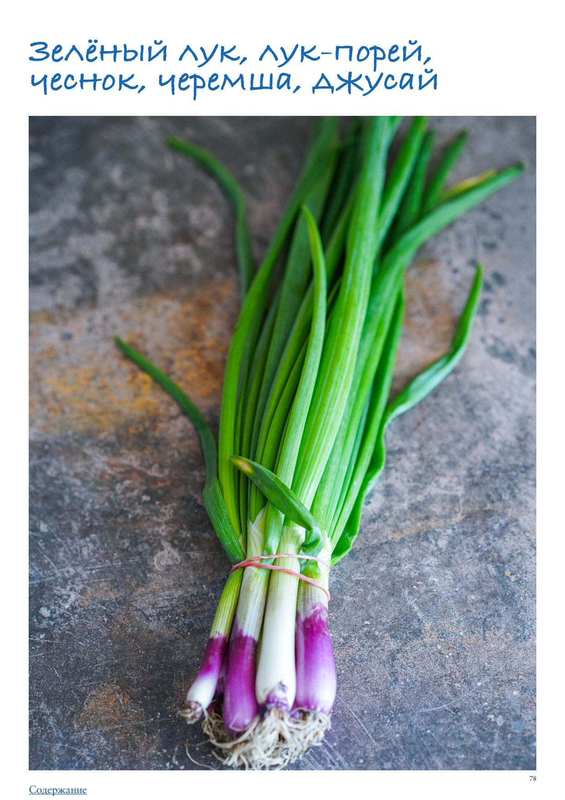

Зеленый лук, лук-порей, чеснок, черемша, джусай
Недаром зеленый лук называется по-английски spring onion («весенний лук»), ведь один его вид и цвет напоминает нам о пробуждении природы. Поэтому мы решили объединить в один раздел зеленые побеги лука, чеснока и их родственников, которые тоже ассоциируются у нас с весной. Зеленый лук — верхняя часть репчатого лука. Его вкус более мягкий по сравнению с луковичной частью. Среди разновидностей зеленого лука нам знакомы ярко-зеленый лук-батун с практически отсутствующей белой частью, шнитт-лук (он же сибулет или лук-резанец) с тонкими перышками и более мягким вкусом, и лук-слизун с плоскими и очень сочными листьями, который чаще встречается в диком виде. Без зеленого лука немыслима китайская кухня, где каждый второй, если не первый, рецепт начинается со слов «обжарьте белую часть зеленого лука, имбирь и чеснок». Зеленый лук чаще всего едят в свежем виде, добавляя в салаты, холодные супы и украшая им блюда, но он также готов взять на себя существенную роль в качестве начинки для пирогов с яйцами и сыром, кутабов с зеленью, стир-фраях и китайских лепешках с зеленым луком. Лук-порей — выведенный в Средиземноморье крупный лук с нежной по вкусу нижней белой частью стебля и жесткими темно-зелеными листьями. У тонкого, молодого порея белую часть можно использовать в сыром виде, добавляя в салаты, у крупного, более зрелого, ее обязательно обрабатывают термически. Благодаря приятному нежному, слегка сладковатому в готовом виде вкусу, порей — отличная альтернатива репчатому луку практически в любых блюдах. Благодаря необычной форме прямого слоистого стебля порей отлично подходит для фарширования (трубочки порея формой напоминают пасту канеллони). Черемша (колба, медвежий лук, дикий чеснок, дикий порей) — тоже сезонный продукт, появляющийся на прилавках рынков поздней весной. Чаще всего собирают и продают дикую черемшу, хотя ее довольно легко вырастить самим. В пищу употребляются все части растения — мини-луковка, стебель и листья, особенно если они молодые, лучше всего в свежем виде — в салатах, в соусах, отличное решение — песто из черемши. Кроме того, с черемшой делают начинки для пирогов, добавляют в зеленые щи, кутабы с зеленью и даже готовят на гриле. Черемшу можно использовать так же, как и стрелки чеснока, пропустив через мясорубку с соленым салом и заморозив на зиму. Несмотря на то, что черемша может достигать 40 см в высоту, самая вкусная и нежная — не более 20 см. Иногда черемша продается с маленькой луковичкой, но чаще срезанная. Джусай (душистый, ветвистый лук) — имеет множество названий: татарский, азиатский лук, жусай, китайский лук, полевой чеснок, лук чесночный, англ. Chinese chives. Но под всеми этими именами скрывается дикий душистый лук, который давно был «одомашнен» человеком. У этой популярной азиатской травы сочные зеленые стрелки и необычный вкус, в котором сочетаются легко узнаваемые нотки зеленого лука и чеснока. Зелень джусая солят, маринуют, добавляют в блюда азиатский кухни в свежем виде. Самое, пожалуй, известное блюдо с джусаем — китайские «зеленые» пельмени, где свиной фарш составляет лишь 30% начинки, а остальное — мелко нарезанный джусай. После того, как их сварят, начинка просвечивает сквозь тесто, за это они и получили название «зеленые». Стрелки чеснока, появляющиеся в начале лета — исключительно сезонный продукт, поэтому нужно максимально использовать этот подарок природы. По сути «стрелка» — это цветонос чеснока, появляющийся из самого центра чесночной головки, на котором, если его не убрать, появляется цветок и семена. Их принято убирать, чтобы они не мешали формированию основной, подземной части чеснока. И если раньше их просто выбрасывали, то сейчас многие распробовали их свежий, более мягкий, чем у зрелого чеснока, вкус и хрустящую текстуру. Нужно помнить, что плотность этого чесночного побега неоднородна по всей длине — чем ближе к бутону, тем волокнистее, поэтому нижнюю, более нежную часть можно использовать в сыром виде или с минимальной термической обработкой, а вот более жесткую — хорошенько измельчить. Стрелки чеснока можно тушить, обжаривать, добавлять в салаты, стир-фраи, тарты и фриттату,
а также мариновать и замораживать. Если заморозить стрелки целиком, то при разморозке они теряют привлекательный вид и становятся волокнистыми, поэтому предлагаем измельчить их с оливковым маслом и щепоткой соли с помощью блендера или кухонного комбайна, а зимой добавлять это изумрудное сокровище в готовые блюда. Еще один отличный рецепт — пропустить стрелки через мясорубку с хорошим (желательно с хребта) соленым салом, после чего заморозить в небольших контейнерах. Вы скажете себе огромное спасибо, когда зимой подадите такую пасту с ломтиком ржаного хлеба к борщу! Как выбирать Раз уж мы выбираем зелень, следует убедиться, что все побеги яркого зеленого цвета до самых кончиков, упругие, плотные, не вялые, без слизи и пятен, без неприятного запаха. Если есть возможность купить зелень с корешками, отдайте предпочтение именно ей, она будет гораздо лучше храниться. Если же она срезана, то срез не должен быть сильно сухим или подвядшим. Лук-порей может быть разного диаметра, от 1 до 5 см. Выбирайте в соответствии с выбранным рецептом. Для добавления в тушеные блюда или супы подойдет любой, для тушения или запекания в качестве самостоятельного блюда лучше выбрать потоньше, а для фарширования, наоборот, потолще. Обращайте внимание на зеленую часть порея — она не должна быть с желтизной. Как хранить Когда вы принесли зелень домой, первое, что следует сделать — убрать нитку или резинку, которой связан пучок, промыть, если видны явные загрязнения, обсушить от остатков влаги, завернуть во влажное бумажное полотенце и хранить 2–3 дня в ящике для овощей. Если вам досталась зелень с мини-луковками и корешками, ее можно сохранить дольше, 7–10 дней в холодильнике, поставив пучок в банку с небольшим количеством воды и надев сверху пластиковый пакет. Как очистить Чаще всего обработка свежей зелени не требует особых усилий и сноровки, необходимо лишь обработать место среза (это легко сделать, если собрать зелень в пучок, поставить вертикально срезом вниз, чтобы выровнять все побеги, и отрезать примерно 1 см). Кроме того иногда требуется убрать один внешний лист, который может быть грязным или слегка вялым. Лук-порей требует чуть больше внимания, потому что в основании его листьев практически всегда скапливается грязь. Отрезав сплошную белую часть порея, разрежьте ее вдоль пополам и промойте под проточной водой, слегка раздвигая слои вверху, чтобы вымыть из них возможную грязь. Зеленые перья также хорошо промойте, если собираетесь их использовать. Лайфхаки